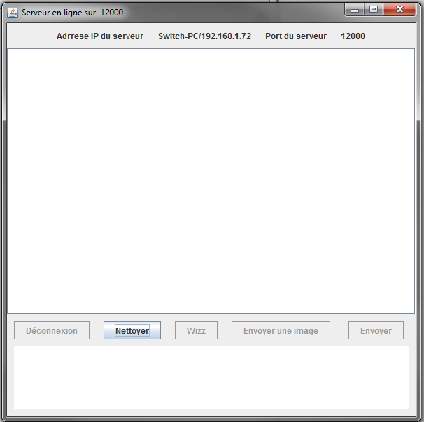
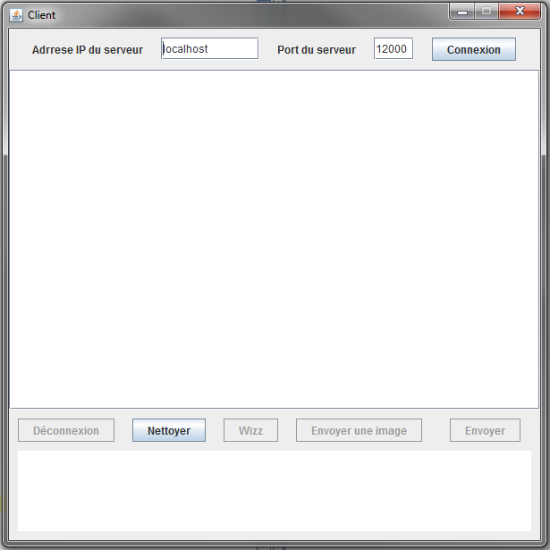

Messagerie Reseau javascool
Vianney Fargere, Lucas Gasté, Francois Morelle
Un logiciel avec 2 fenêtres
Notre messagerie est faite en deux fenêtres :
Le serveur: il ouvre un port de la machine et attend une connexion rentrante. Une fois la connexion acceptée par le serveur le client et celui-ci peuvent communiquer sur le réseau.
Le client: celui-ci va rentrer l'adresse IP du serveur et le port ouvert par celui-ci pour tenter de s'y connecter. Si le serveur accepte la connexion ils pourront communiquer entre eux.
L'interface du serveur

L'interface du serveur est faite de 3 parties.
La première affiche les informations (port, adresse IP) pour que le client puisse les récupérer.
La seconde partie est une zone d'affichage. On peut y mettre du HTML pour la mise en forme, c'est ici que
les messages vont s'afficher. Elle est commune aux deux fenêtres
Et enfin la 3ème qui est également commune aux deux fênetres permet à l'utilisateur de multiples actions.
- Se déconnecter
- D'effacer la zone d'affichage pour plus de clarté
- D'envoyer un wizz
- D'envoyer une image
- Ou simplement d'envoyer un message texte
On retrouve également la zone de texte ou l'utilisateur peut rentrer un message.
L'interface du client

L'interface du client est également faite de 3 parties.
La seule chose qui diffère de l'interface du serveur c'est la partie du haut. Elle permet à l'utilisateur du
client de rentrer les informations du serveur pour pouvoir s'y connecter.
Améliorations possibles
1. La gestion d'autres fichiers
Il sera possible dans le futur d'envisager plusieurs améliorations tels que l'envoie de GIF, de vidéos, de fichiers. Il faudrait également créer un thread lors d'envois de fichiers volumineux pour éviter de bloquer le programme.
2. Une architecture P2P ou client-serveur
Il serait également possible de continuer sur 2 voies :
- La suppression des deux classes distinctes pour la création d'une classe de type "servent" (contraction de serveur et client). Ce qui permettra une meilleure utilisation pair à pair (peer to peer ou P2P) chaque utilisateur pouvant jouer le rôle de client ou serveur.
- Ou alors en suivant une architecture de type client-serveur intégrer au serveur la possibilité de connecter plusieurs utilisateurs en même temps pour une messagerie de groupe.


A gauche une architecture de type client - serveur et à droite une architecture P2P.
3. L'utilisation d'username
Pour le moment l'utilisateur est reconnu grâce à son IP, on pourrait imaginer un système qui demande à l'utilisateur de rentrer un pseudo et de l'utiliser comme identifiant.